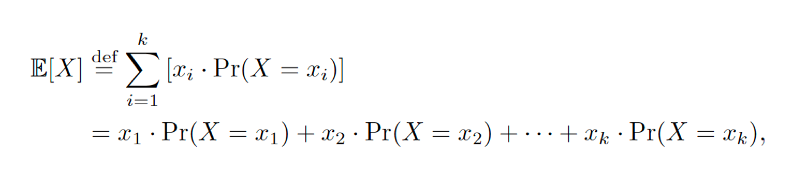

Machine Learning
Chap2 - Notion and Definitions
-
The gradient of a function::= a vector of partial derivatives
-
Usually expressed by italic capital letter
-
Expectation value

-
Parameters -> directly modified by learning algorithms
-
Classification
-
assign labels to unlabeled examples
-
predicts real-valued labels (target)
Model-based & Instrumental Based Learning
-
Creates models
-
Develops parameter
-
Instrumental Based Learning
-
K-Nearest Neighbors (KNN)
-
Looks at the close neighbourhood of the input, output the most often ones.
-
“Instead of estimating a model, store all training examples in memory and make predictions using a similarity measure”.
-
See demo https://github.com/zotroneneis/machine_learning_basics/blob/master/k_nearest_neighbour.ipynb